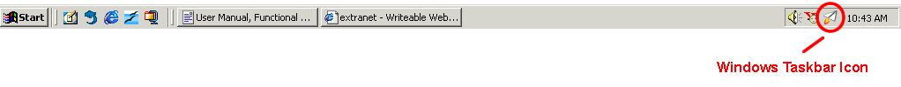
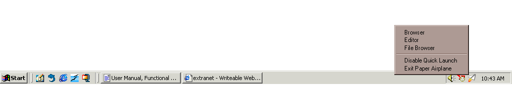

| | |
Table of Contents | Last | Next
Windows Taskbar Icon
Paper Airplane includes an icon that runs in the Windows taskbar:

Windows Taskbar Icon Circled
The icon appears in the taskbar either when Paper Airplane is first started or when Windows starts if the Quick Start function is on (see [put Quick Start link here] for more information on Quick Start).
The taskbar icon serves two purposes. First, it allows the browser to be loaded quickly to enhance browsing. Second, it means that your computer remains active in the peer-to-peer Two Way Web network even when you are not viewing web pages.
Double-clicking the taskbar icon will display a browser window if you are already signed into the Two Way Web. If you are not logged in then a Sign-In dialog is shown.
Right-clicking shows the following menu:

Right-Click Menu for Windows Taskbar Icon
These options are explained below: